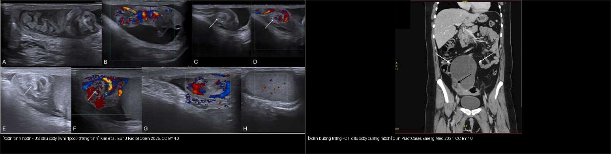
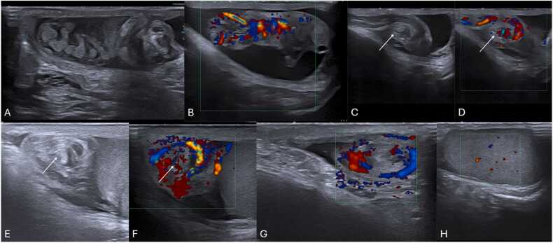
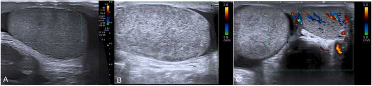
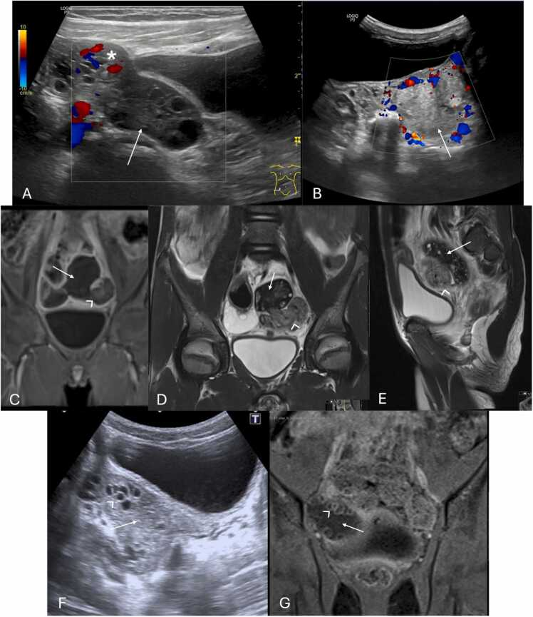
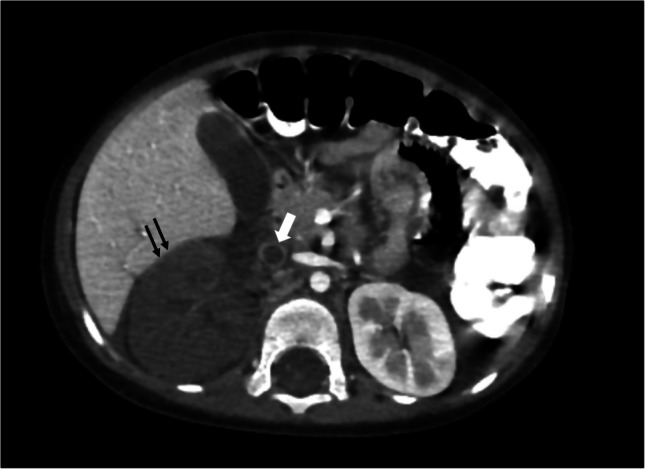
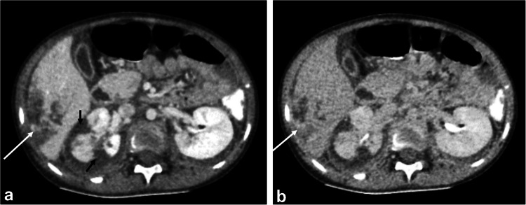

636 — Cấp cứu niệu–sinh dục nhi: chấn thương thận (AAST I–V) & xoắn tinh hoàn/buồng trứng (dấu xoáy)
Tags: pattern:chan-thuong-than-nhi pattern:xoan-tinh-hoan pattern:xoan-buong-trung vung:than-nieu-nhi vung:sinh-duc-nhi score:AAST protocol:CT-bung-chap-nhanh protocol:sieu-am-Doppler
Mức chắc chắn (certainty): tổng hợp y văn (literature synthesis) — nhóm tự biên từ y văn mở (review + guideline có số), chưa gắn một ca nguyên văn đơn lẻ; 4 ca quiz lấy từ các bài CC BY có số liệu mô tả nguyên văn.
Hai bệnh cảnh "cấp cứu niệu–sinh dục nhi" khác nhau về mặt cắt nhưng cùng luật: tạng/tuyến bị xoắn hoặc chấn thương làm gián đoạn tưới máu → cửa sổ cứu tạng tính bằng GIỜ. Hình ảnh phải trả lời 2 câu: (1) đang còn mạch hay không? (2) tổn thương còn khu trú hay đã mất mạch/tràn ra ngoài? — không dừng ở mô tả hình thái.
1. Tổng quan — cơ chế & TẠI SAO ảnh hiện như vậy
A. Chấn thương thận ở trẻ
- Thận là tạng bị chấn thương đứng thứ 3 ở trẻ (sau gan, lách) trong chấn thương bụng kín; trẻ nhạy cảm hơn người lớn vì thận to tương đối + ít mỡ quanh thận + lồng ngực/khoang bụng dưới sườn mềm, di động.
- Phần lớn chấn thương thận kín, độ thấp (I–III) và điều trị bảo tồn; nhưng tổn thương cuống mạch (grade V) phải can thiệp sớm để giữ thận.
- TẠI SAO (vật lý CT có cản quang) — phân biệt 3 thứ cùng "giảm tỷ trọng" nhưng bản chất khác nhau:
- Đụng dập (contusion): phù/xuất huyết vi mô → giảm ngấm thoáng qua; ngấm lại gần đồng tỷ trọng ở thì muộn → chốt.
- Hoại tử/mất mạch (infarction/devascularization): mạch bị tắc/huyết khối → không ngấm ở MỌI thì (thì ĐM, TM, muộn đều tối) — đây là điểm khác biệt duy nhất với đụng dập.
- Thoát thuốc hoạt tính (active extravasation): máu đang chảy → ổ tăng tỷ trọng lan rộng dần ra giữa các thì; khác giả phình (pseudoaneurysm) = ổ tròn giữ hình, không to thêm, ngấm đồng thì với ĐM.
- Cục máu canh gác (sentinel clot) 45–70 HU nằm sát nhu mô tổn thương nhất — vì cục máu đông đặc nhất ở gần nguồn chảy, loãng dần ra xa.
- Ngưỡng tưới máu bao trùm tất cả: chấn thương thận nặng grade IV–V nguy cơ thận câm; thận còn chức năng đòi hỏi tưới máu lại trong vài giờ, nên không được để thì muộn làm chậm chuyển mổ.
B. Xoắn tinh hoàn (testicular torsion)
- Cơ chế: thừng tinh xoắn → ứ máu tĩnh mạch → áp lực tĩnh mạch tăng tới bằng áp lực động mạch → ngừng tưới máu → hoại tử. Vì vậy cửa sổ vàng tính bằng giờ:
- < 12 giờ: cứu được ~90%**; **13–24 giờ: ~54%**; **> 24 giờ: chỉ ~18% (giảm dần rất dốc).
- Xoắn tinh hoàn chiếm 86% các ca "bìu cấp" ở trẻ vị thành niên; tần suất ~25/100.000 nam < 25 tuổi.
- Hai kiểu treo bất thường: intravaginal (trong bao tinh hoàn) do dị dạng bell-clapper (tinh hoàn xoay tự do trong bao) — tuổi dậy thì; extravaginal (ngoài bao) ở sơ sinh (70% trước sinh, 30% sau sinh; tối đa 22% hai bên).
- Vì sao cần cố định bên đối diện: nguy cơ xoắn đồng thời/lệch thì ở bên còn lại ~40% → orchidopexy cả hai bên.
- TẠI SAO siêu âm thấy: giai đoạn sớm (4–6 giờ đầu) nhu mô còn đồng âm = còn sống; sau đó phù → giảm âm/không đồng nhất = nguy cơ hoại tử (đồng nhất = còn sống, không đồng nhất = không còn sống).
C. Xoắn buồng trứng/phần phụ (ovarian–adnexal torsion)
- Cơ chế: cuống tử cung–buồng trứng xoắn → ứ máu, hoại tử. Bên phải hay bị hơn (manh tràng di động, đại tràng sigma cố định chặn bên trái).
- Ở trẻ 25% xoắn xảy ra trên buồng trứng BÌNH THƯỜNG (dây chằng tử cung–buồng trứng dài, di động) — khác người lớn thường có khối kèm theo; khối kèm theo hay lành (nang, teratoma).
- Tuổi 2 đỉnh: năm đầu đời (nang do hormone mẹ) và quanh menarche.
- Đau > 10 giờ → tăng nguy cơ hoại tử nhu mô (mốc thời gian quyết định "còn cứu được").
- TẠI SAO Doppler không được tin tuyệt đối: buồng trứng có nguồn cấp máu KÉP (ĐM buồng trứng + ĐM tử cung) → xoắn vẫn có thể còn thấy phổ mạch.
2. Mẫu hình + chẩn đoán phân biệt theo vị trí (gamut)
- Đau bìu cấp (acute scrotum) ở trẻ trai: xoắn tinh hoàn → viêm mào tinh (epididymitis) → xoắn mào tinh (testicular appendage) → thoát vị bẹn nghẹt → viêm tinh hoàn do quai bị.
- Đau bụng–chậu cấp ở trẻ gái: xoắn buồng trứng/phần phụ → nang xuất huyết (mimic hay gặp nhất) → áp-xe vòi–buồng trứng → u buồng trứng xoắn/hoại tử → thai ngoài tử cung → viêm ruột thừa (nhất là nhũ nhi với xoắn "lệch chỗ").
- Chấn thương thận: phân lớp theo AAST 2018 (I–V) trên CT; đọc song song nhu mô (rách/đụng dập) + tụ máu quanh thận (trong/ngoài Gerota) + hệ đài–bể (rò nước tiểu) + mạch (nhồi máu/thoát thuốc/cuống).
- Nguyên tắc vàng nhi khoa: ở trẻ, điều trị dựa trên huyết động chứ không chỉ vào độ AAST — trẻ ổn định được điều trị bảo tồn dù độ cao (AAST chủ yếu định hướng theo dõi/nghỉ vận động).
3. Bảng so sánh phân biệt (ma trận đối chiếu)
| Thực thể (entity) | Hình ảnh điển hình | Chốt vào (rule-in) | Chốt loại (rule-out) | Gợi ý xác nhận |
|---|---|---|---|---|
| Xoắn tinh hoàn | Tinh hoàn to, mất/giảm mạch, dấu xoáy (whirlpool) thừng tinh, RI > 0,75 sớm | Dấu xoáy thừng tinh (Se 92%/Sp 99%) + mất mạch bất đối xứng | Mào tinh to tăng mạch + RI thấp → viêm mào tinh | Siêu âm Doppler bìu; nếu nghi ngờ → mổ thăm dò, không trì hoãn vì chờ ảnh |
| Viêm mào tinh (epididymitis) | Mào tinh to, đồng/giảm âm nhẹ, tăng mạch, RI thấp | Tăng phổ mạch mào tinh + mạch tinh hoàn bình thường | Mất mạch + whirlpool → xoắn | Doppler + bệnh sử (nhiễm trùng, tiểu buốt) |
| Xoắn mào tinh (appendage torsion) | Khối tròn ngoài tinh hoàn, không đồng nhất, mạch tinh hoàn còn | Blue dot sign + mạch tinh hoàn bình thường | Mất mạch trong tinh hoàn → xoắn tinh hoàn | Doppler; điều trị bảo tồn |
| Xoắn buồng trứng | Buồng trứng to > 20 mL (bất đối xứng), nhu mô không đồng nhất, mất mạch, dấu xoáy cuống, buồng trứng "lệch chỗ" (giữa/đối bên) | Dấu xoáy cuống mạch (Se 65%/Sp 91%) ± mất mạch | Có "retractable clot sign"/nang xuất huyết không có cuống xoáy → nang xuất huyết | Siêu âm Doppler (transabdominal ở trẻ); MRI/CEUS khi mập mờ |
| Nang buồng trứng xuất huyết (mimic) | Khối lớn, lệch âm phức tạp, cục máu co rút (retractable clot), không mạch | Cục máu co rút + không dấu xoáy + đỡ đau theo dõi | Thấy dấu xoáy cuống → xoắn | Theo dõi siêu âm; nội soi khi vẫn nghi xoắn |
| Chấn thương thận AAST I–III | Đụng dập/tụ máu dưới bao; rách ≤ 1 cm (II), > 1 cm không vào hệ đài (III); mạch trong Gerota | Rách > 1 cm, KHÔNG rò nước tiểu + tụ máu trong Gerota | Rò thuốc thì muộn (vào hệ đài) → grade IV | CT cản quang thì TM ± thì muộn |
| Chấn thương thận AAST IV | Rách vào hệ đài–bể (rò nước tiểu), rách UPJ, mạch lan ra ngoài Gerota, nhồi máu phân thùy | Thoát thuốc thì muộn = rò nước tiểu hoặc mất mạch vượt Gerota | Không rò + tụ máu khu trú → grade III | CT 3 thì (ĐM/TM/muộn); MPR |
| Chấn thương thận AAST V | Thận vỡ nát, cuống mạch đứt, tắc/đứt ĐM–TM thận chính, mất mạch toàn thận | Không ngấm toàn bộ nhu mô + huyết khối cuống | Còn ngấm một phần (có ĐM phụ) → không phải V | CT; lưu ý tổn thương cuống mạch cần can thiệp sớm |

Trái: siêu âm bìu — dấu xoáy (whirlpool) của thừng tinh xoắn. Phải: CT — dấu xoáy cuống mạch của buồng trứng xoắn. Nguồn: Freitas et al. Eur J Radiol Open 2025 (CC BY 4.0) + Livingston et al. Clin Pract Cases Emerg Med 2021 (CC BY 4.0). Ảnh ghép letterbox.4. Protocol chụp + hệ phân độ/điểm chuẩn hóa
- CT bụng–chậu chấn thương (ưu tiên ALARA): phần lớn trẻ đủ với một thì tĩnh mạch (portal venous); thêm thì động mạch khi nghi tổn thương mạch (thoát thuốc/giả phình/mất mạch), và thì muộn (delayed 5–10 phút) khi nghi rò nước tiểu (grade IV) hoặc rò động–tĩnh mạch. Luôn MPR/3D để đọc cuống mạch và đường rách uốn lượn.
- Siêu âm Doppler bìu: đầu dò tần số cao, so sánh hai bên, và soi toàn bộ thừng tinh để tìm dấu xoáy (kể cả khi còn mạch).
- Siêu âm bụng–chậu trẻ gái: đường bụng (transabdominal), đo thể tích buồng trứng 2 bên, tìm cuống xoáy; CEUS khi Doppler mập mờ (Se 94%/Sp 100%, độ chính xác 95% so với siêu âm thường 81%).
- Hệ phân độ:
- AAST-OIS 2018 (Organ Injury Scale) cho thận — grade VI gan đã bỏ, V là cao nhất.
- Dấu xoáy (whirlpool) là dấu trực tiếp của xoắn (không phụ thuộc phổ mạch); xoắn tinh hoàn: Se 92%/Sp 99% ở trẻ lớn; xoắn buồng trứng: Se 65%/Sp 91%.
flowchart TD
A[Đau bìu cấp trẻ trai] --> B[Siêu âm Doppler bìu 2 bên]
B --> C{Dấu xoáy thừng tinh?}
C -->|Có| D["Xoắn tinh hoàn → mổ thăm dò + orchidopexy 2 bên"]
C -->|Không| E{Mất mạch tinh hoàn?}
E -->|Có| D
E -->|Không| F["Viêm mào tinh / xoắn mào tinh → điều trị theo nguyên nhân"]
G[Đau bụng-chậu cấp trẻ gái] --> H[Siêu âm bụng-chậu ± Doppler]
H --> I{Buồng trứng to > 20 mL + dấu xoáy/mất mạch?}
I -->|Có| J["Nghi xoắn → nội soi cấp cứu gỡ xoắn, giữ buồng trứng"]
I -->|Không, có cục máu co rút| K["Nang xuất huyết → theo dõi"]
I -->|Mập mờ| L["CEUS hoặc MRI"]
M[Chấn thương bụng kín] --> N[CT thì TM ± ĐM ± muộn, MPR]
N --> O{Rò thuốc thì muộn / mất mạch ngoài Gerota / cuống?}
O -->|Không| P["AAST I-III → bảo tồn nếu huyết động ổn"]
O -->|Có| Q["AAST IV-V → hội chẩn can thiệp/mổ sớm"]
5. Biến thể bình thường và cạm bẫy
- CÒN DÒNG CHẢY KHÔNG LOẠI TRỪ XOẮN: buồng trứng có nguồn mạch kép (ĐM buồng trứng + ĐM tử cung); tinh hoàn xoắn < 360° hoặc giai đoạn sớm có thể còn phổ — luôn tìm dấu xoáy.
- RI cao (> 0,75) là dấu SỚM, không phải "bình thường": tăng đề kháng dòng chảy = chèn ép vi mạch.
- Sơ sinh: dòng chảy tinh hoàn bình thường vốn khó thấy → dựa vào hình thái (to, không đồng nhất, vôi hóa bao tinh hoàn, tràn dịch) hơn là "mất mạch".
- Nang xuất huyết buồng trứng là mimic hay nhất — phân biệt bằng cục máu co rút và không có dấu xoáy.
- Buồng trứng "lệch chỗ" (nằm giữa/đối bên) dễ bị bỏ qua nếu chỉ so kích thước.
- Chấn thương thận — 3 cạm bẫy CT: (1) vùng giảm tỷ trọng ngấm lại thì muộn = đụng dập, không phải nhồi máu; (2) giả phình giữ hình, thoát thuốc lan rộng giữa các thì; (3) không chụp lặp lại thừa ở trẻ ổn định — ưu tiên ALARA, đọc kỹ một lần chụp chất lượng.
- Tổn thương cuống mạch thận có thể "im lặng" trên thì TM đơn thuần nếu không có mất mạch rõ → khi nghi ngờ phải thêm thì ĐM / MPR.
6. Tự lượng giá — Blind Quiz (ảnh trơn ngoài, đáp án ẩn trong khối chi tiết)
Ca 1 — Nam 15 tuổi, đau bìu trái cấp, tinh hoàn nằm cao. Tìm dấu hiệu CHỐT trước khi mở đáp án.

- Gợi ý lâm sàng (clinical context): đau đột ngột, không sốt, mất phản xạ cremaster.
- Câu hỏi: Dấu hiệu trực tiếp của xoắn là gì? Khi mạch vẫn còn thì sao? Xử trí?
Bấm để hiện đáp án (findings + chẩn đoán)
- Dấu xoáy (whirlpool sign): thừng tinh cuộn xoáy tại trung tâm (mũi tên) — dấu trực tiếp, không phụ thuộc phổ mạch. Se 92%/Sp 99% ở trẻ lớn.
- Hình G–H minh họa ca mạch tinh hoàn còn nhưng vẫn có dấu xoáy → chẩn đoán dựa vào dấu xoáy; không vì "còn mạch" mà loại xoắn.
- Xử trí: mổ thăm dò sớm + gỡ xoắn + cố định tinh hoàn cả hai bên (nguy cơ xoắn bên còn lại ~40%). Cửa sổ vàng: < 12 giờ cứu ~90%; > 24 giờ còn ~18%.
- Nguồn ảnh: Freitas et al., Eur J Radiol Open 2025 (PMC11978341) — CC BY 4.0.
Ca 2 — Hai bé trai: một đến sau < 6 giờ, một đến sau 12 giờ. Ảnh gợi ý điều gì về khả năng sống của tinh hoàn?

- Câu hỏi: Panel nào tinh hoàn còn khả năng sống? Vì sao "không đồng nhất" lại là dấu xấu?
Bấm để hiện đáp án (findings + chẩn đoán)
- (A) < 6 giờ: mất mạch nhưng nhu mô còn đồng âm → tinh hoàn còn sống (đồng nhất = còn khả năng phục hồi).
- (B, C) 12 giờ: tinh hoàn to (24 mL so với 13 mL bên đối diện), không đồng nhất do phù và hoại tử → nguy cơ mất tinh hoàn cao.
- Bài học: thời gian quyết định; "đồng nhất ↔ còn sống, không đồng nhất ↔ hoại tử".
- Nguồn ảnh: Freitas et al., Eur J Radiol Open 2025 (PMC11978341) — CC BY 4.0.
Ca 3 — Trẻ gái 14 tuổi, đau bụng–chậu trái đột ngột. Đọc phần siêu âm Doppler trước, rồi mở đáp án.

- Câu hỏi: Dấu hiệu chính là gì? Vì sao còn dòng chảy không loại trừ xoắn? Xử trí?
Bấm để hiện đáp án (findings + chẩn đoán)
- (A, B): buồng trứng bất đối xứng, mất tín hiệu mạch (mũi tên) → gợi ý xoắn. Hình C–E (MRI) tương ứng, F–G: follicular ring sign (gỡ xoắn bên trước, đợt xoắn bên phải sau này).
- Còn dòng chảy vẫn có thể xoắn vì buồng trứng có nguồn mạch kép (ĐM buồng trứng + ĐM tử cung); "mất mạch" chỉ Se 40–73%.
- Xử trí: nội soi cấp cứu gỡ xoắn, bảo tồn buồng trứng (kể cả buồng trứng trông "hoại tử" vẫn có thể hồi phục sau ~6 tuần); đau > 10 giờ tăng nguy cơ hoại tử.
- Nguồn ảnh: Freitas et al., Eur J Radiol Open 2025 (PMC11978341) — CC BY 4.0.
Ca 4 — Bé trai 2 tuổi sau tai nạn; thận phải to, không ngấm thuốc. Phân độ AAST trước khi mở đáp án.

- Câu hỏi: Phân độ? Dấu hiệu mạch máu kèm theo? Vì sao cấp cứu?
Bấm để hiện đáp án (findings + chẩn đoán)
- Thận phải to, mất mạch hoàn toàn (không ngấm nhu mô) + huyết khối trong lòng TM thận lan tới IVC (mũi tên trắng) → AAST grade V (mất mạch toàn thận/cuống mạch).
- Đây là ca hình minh họa của bài về phân độ khối máu tụ và mạch: mất ngấm mọi thì phân biệt với đụng dập (ngấm lại thì muộn).
- Cấp cứu: tổn thương cuống mạch chính cần can thiệp trong vài giờ để giữ nhu mô; nhưng ở trẻ quyết định dựa trên huyết động, phần lớn độ thấp bảo tồn.
- Nguồn ảnh: Mohammad et al., Pediatr Radiol 2025 (PMC12513975) — CC BY 4.0.
Ca 5 — Trẻ 7 tuổi sau tai nạn: nhu mô thận có vùng không ngấm mọi thì + ổ ngấm hình tròn trong gan.

- Câu hỏi: Hai loại tổn thương mạch khác nhau thế nào (vùng không ngấm vs ổ tròn ngấm)? Vì sao cần thì muộn?
Bấm để hiện đáp án (findings + chẩn đoán)
- Thận: các vùng hình chêm không ngấm cản quang ở MỌI thì = nhồi máu phân thùy (grade IV do tắc mạch, khác đụng dập sẽ ngấm lại thì muộn).
- Gan: ổ ngấm thuốc theo bể máu (contained vascular injury/pseudoaneurysm) — giữ hình, không lan giữa các thì, khác thoát thuốc hoạt tính (lan rộng dần).
- Thì muộn giúp thấy rò nước tiểu và phân biệt tổn thương mạch kín (giả phình) với chảy máu đang tiếp diễn.
- Nguồn ảnh: Mohammad et al., Pediatr Radiol 2025 (PMC12513975) — CC BY 4.0.
Bài liên quan chéo
- 600 – Tổng quan Hệ Nhi khoa
- 635 – Dị tật hệ tiết niệu nhi (SFU/VUR/PUV) (bất thường niệu nhi không do chấn thương)
- 140 – Lách & chấn thương tạng đặc: AAST (AAST lách/gan + thoát thuốc vs giả phình)
- 622 – Tắc ruột sơ sinh (double-bubble, microcolon)
- 630 – U bụng nhi (neuroblastoma vs Wilms) (khối thận ở trẻ)
- 530 – Phần phụ O-RADS (khối phần phụ ở người lớn)
- 080 – Chấn thương ngực (đa chấn thương)
Ảnh
- Chi tiết nguồn + giấy phép từng ảnh:
images/CREDITS.mdvàsources.md. - Tất cả ảnh bài này là CC BY 4.0 (được phép tái sử dụng, ghi nguồn) → không crop ảnh gốc; ảnh ghép dùng
tools/make_composite.py(letterbox). - Radiopaedia/Eurorad/AuntMinnie: chỉ dẫn link (AuntMinnie không tải).
Không dùng để chẩn đoán độc lập khi chưa có người hướng dẫn.